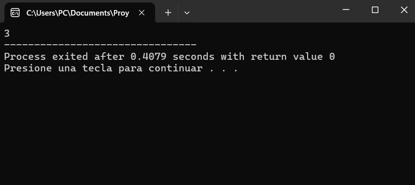
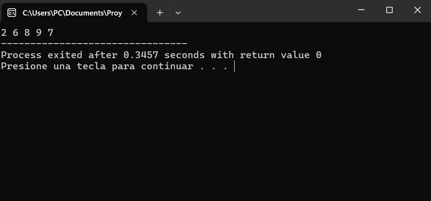
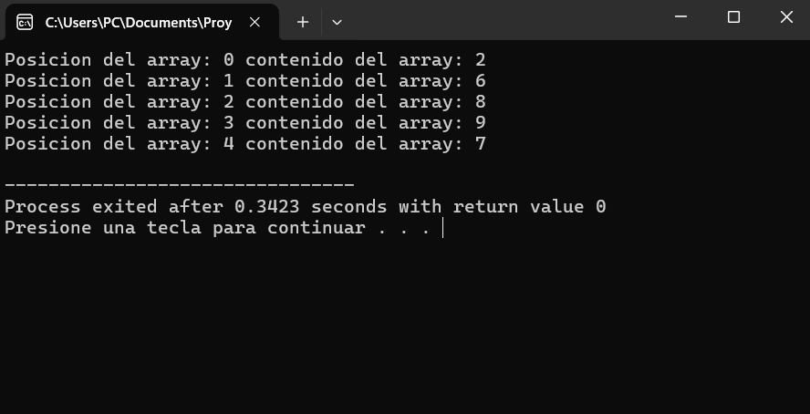

Arreglos
Un arreglo también conocido como array en inglés es una estructura de datos que permite almacenar una colección del mismo tipo en una secuencia contigua en mememoria. Cada elemento en el arreglo se identifica mediante un índice numérico, que comienza desde cero y se incrementa en uno para cada elemento sucesivo. Los arreglos proporcionan una forma eficiente de almacenar y acceder a múltiples valores relacionados bajo un mismo nombre.
Tipo y tamaño fijo: Los arreglos en C++ deben contener elementos del mismo tipo de datos por ejemplo, enteros, caracteres, etc. Además, el tamaño del arreglo se determina en el momento de su declaración y es fijo durante la ejecución del programa. Esto significa que una vez que se crea un arreglo, no se puede modificar su tamaño.
Índices: Los elementos en un arreglo están indexados numéricamente. El primer elemento tiene el índice 0, el segundo tiene el índice 1, y así sucesivamente. Para acceder a un elemento en particular, se utiliza su índice dentro de corchetes por ejemplo, miArreglo[0] accede al primer elemento.
Contigüidad en memoria: Los elementos del arreglo se amacenan de forma consecutiva en la memoria, lo que permite un acceso rápido y directo a cualquier elemento mediante su índice.
Inicilización: Los arreglos pueden ser inicializados durante su declaración con valores específicos para cada elemento. Por ejemplo, int miArreglo[3] = {1, 2, 3}; crea un arreglo de enteros con tres elementos inicializados a 1, 2 y 3, respectivamente.
Uso de bucles: Dado que los arreglos contienen múltiples elementos del mmismo tipo, es común utilizar bucles por ejemplo, bucle for para recorrerlos y realizar operaciones en cada uno de los elementos.
Fuera de limites: Es esencial tener cuidado con los índices de los arreglos, ya que si se intenta acceder a una posición fuera de los limites del arreglo por ejemplo, un índice negativo o mayor que el tamaño del arreglo, se producirá un comportamiento indefinido y podría resultar en errores o fallas del programa.
Para comenzar con la práctica de este módulo, necesitamos conocer la estructura básica de C++. Una vez familiarizados con ella, procederemos a declarar una variable con el tipo de dato de números enteros. Posteriormente, abriremos corchetes [] y dentro de ellos, ingresaremos el número 5. Aquí tienes un código de ejemplo:
1 #include<iostream>
2 using namespacestd;
3 int main()
4 {
5 int numeros[5];
6 return 0;
7 }
Podemos observar que hemos declarado la variable numeros, pero le asignamos 5 entre los corchetes. Esta especificación indica que nuestra variable, que originalmente solo tenía espacio para almacenar un valor, ahora cuenta con 5 espacios. Esto es lo que conocemos como arreglo.
Al igual que con cualquier variable, al declarar un arreglo, sus elementos tienen valores nulos inicialmente. Sin embargo, podemos comenzar a manipularlo y asignarle valores.
Continuaremos con la práctica para darle valores a la variable numeros. Para ello, llamaremos al arreglo y dentro de los corchetes indicaremos la posición en la que deseamos ingresar el dato.
1 #include<iostream>
2 using namespace std;
3 int main()
4 {
5 int numero[5];
6 numeros[0] = 3;
7 return 0;
8 }
En el código, hemos asignado el valor 3 a la posición cero del arreglo. Cabe destacar que los arreglos en C++ comienzan a contarse desde el índice cero. A continuacion, procederemos a mostrar en pantalla el contenido de la posición cero del arreglo numeros.
1 #include<iostream>
2 using namespace std;
3 int main()
4 {
5 int numeros[5];
6 numeros[0] = 3;
7 cout << numeros[0];
8 return 0;
9 }
Utilizamos cout paar mostrar en pantalla el contenido del arreglo numeros en la posición cero. Aquí tienes una imagen de la consola parra visualizar lo que muestra en pantalla:

Efectivamente, nos muestra el número 3 en pantalla.
En esta segunda práctica, realizaremos las misma actividad, pero daremos valores al arreglo desde su declaración. Para lograr esto, en el momento de declarar el arreglo, asignaremos valores utilizando el operador de asignación = seguido de llaves {}. Dentro de las llaves, ingresaremos los valores de las 5 posiciones de nuestro arreglo. Veamos el siguiente código de ejemplo:
1 #include<iostream>
2 using namespace std;
3 int main()
4 {
5 int numeros[5] = { 2, 6, 8, 9, 7};
6 return 0;
7 }Como podemos observar hemos asignado los siguientes valores arrelo:
En la posición [0]el 2. En la posición [1]el 6. En la posición [2]el 8. En la posición [3] el 9, En la posición [4] el 7.
Esta es otra menra de asignarle valores a un arreglo. Ahora procederemos a mostrar todo el arreglo en pantalla utilizando cout y llamando a las posiciones del arreglo. Añadiremos una separación entre cada posición del arreglo parra una mejor visualización. Tomaremos la siguiente imagen como ejemplo:
1 #include<iostream>
2 using namespace std;
3 int main()
4 {
5 int numeros[5] = { 2, 6, 8, 9, 7};
6 cout << numeros[0] <<" "<< numeros[1] <<" "<< numeros[2] class="rojo"><<" "<< numeros[3]<<" "<< numeros[4];
7 return 0;
8 }
Como podemos observar, mos muestra los números que fueron asignados durante la declaración del arreglo.
En esta tercera práctica indexamos el array utilizando la estructura de repetición for, además utilizamos esta estructura para mostrar en pantalla los contenidos del array, veamos el siguiente código de ejemplo:
1 #include<iostream>
2 using namespace std;
3 int main()
4 {
5 int numeros[5] = { 2, 6, 8, 9, 7};
6 for(int i = 0; i <= 4 ; i++ )
7 {
8 cout<<"Posicion del array: "<<i<<" contenido del array: "<<numeros[i]<<endl;
9 }
10 return 0;
11 }